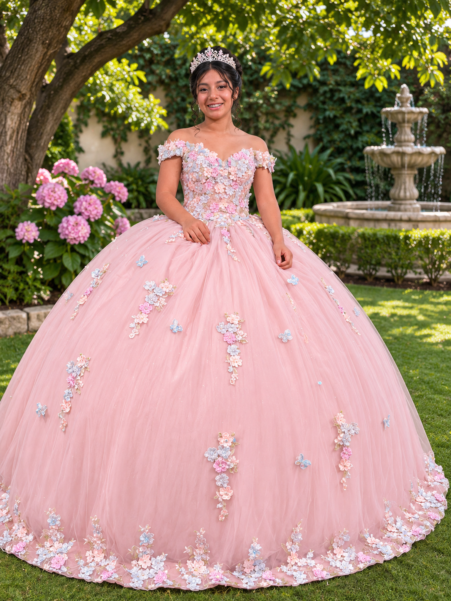

Un día inolvidable
Con mucha ilusión quiero compartir contigo la alegría de celebrar mis quince años.
Con el cariño de mis padres
Viridiana Silverio Garcia
Adrian Martinez Rojas
Y mis padrinos
Berenice Silverio Garcia
Sergio Ordaz
Sábado 16 de enero de 2027
Con mucha ilusión quiero compartir contigo la alegría de celebrar mis quince años.
Con el cariño de mis padres
Viridiana Silverio Garcia
Adrian Martinez Rojas
Y mis padrinos
Berenice Silverio Garcia
Sergio Ordaz

Parroquia Cristo de la Agonía y Nuestra Señora de Guadalupe
Estados Unidos No. 2, México 68
